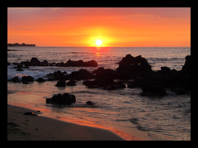
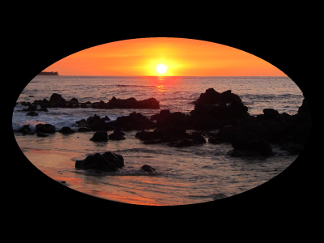
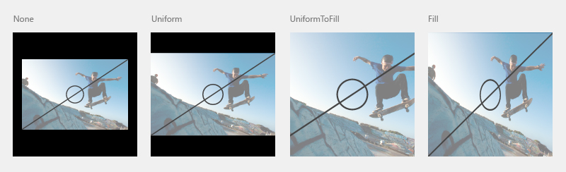
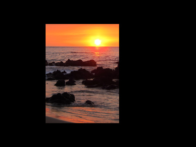

Images and image brushes
To display an image, you can use either the Image object or the ImageBrush object. An Image object renders an image, and an ImageBrush object paints another object with an image.
Are these the right elements?
Use an Image element to display a stand-alone image in your app.
Use an ImageBrush to apply an image to another object. Uses for an ImageBrush include decorative effects for text, or backgrounds for controls or layout containers.
Create an image
- Important APIs: Image class, Source property, ImageBrush class, ImageSource property
The WinUI 3 Gallery app includes interactive examples of most WinUI 3 controls, features, and functionality. Get the app from the Microsoft Store or get the source code on GitHub
Image
This example shows how to create an image by using the Image object.
<Image Width="200" Source="sunset.jpg" />
Here's the rendered Image object.

In this example, the Source property specifies the location of the image that you want to display. You can set the Source by specifying an absolute URL (for example, http://contoso.com/myPicture.jpg) or by specifying a URL that is relative to your app packaging structure. For our example, we put the "sunset.jpg" image file in the root folder of our project and declare project settings that include the image file as content.
ImageBrush
With the ImageBrush object, you can use an image to paint an area that takes a Brush object. For example, you can use an ImageBrush for the value of the Fill property of an Ellipse or the Background property of a Canvas.
The next example shows how to use an ImageBrush to paint an Ellipse.
<Ellipse Height="200" Width="300">
<Ellipse.Fill>
<ImageBrush ImageSource="sunset.jpg" />
</Ellipse.Fill>
</Ellipse>
Here's the Ellipse painted by the ImageBrush.

Stretch an image
If you don't set the Width or Height values of an Image, it is displayed with the dimensions of the image specified by the Source. Setting the Width and Height creates a containing rectangular area in which the image is displayed. You can specify how the image fills this containing area by using the Stretch property. The Stretch property accepts these values, which the Stretch enumeration defines:
- None: The image doesn't stretch to fill the output dimensions. Be careful with this Stretch setting: if the source image is larger than the containing area, your image will be clipped, and this usually isn't desirable because you don't have any control over the viewport like you do with a deliberate Clip.
- Uniform: The image is scaled to fit the output dimensions. But the aspect ratio of the content is preserved. This is the default value.
- UniformToFill: The image is scaled so that it completely fills the output area but preserves its original aspect ratio.
- Fill: The image is scaled to fit the output dimensions. Because the content's height and width are scaled independently, the original aspect ratio of the image might not be preserved. That is, the image might be distorted to completely fill the output area.

Crop an image
You can use the Clip property to clip an area from the image output. You set the Clip property to a Geometry. Currently, non-rectangular clipping is not supported.
The next example shows how to use a RectangleGeometry as the clip region for an image. In this example, we define an Image object with a height of 200. A RectangleGeometry defines a rectangle for the area of the image that will be displayed. The Rect property is set to "25,25,100,150", which defines a rectangle starting at position "25,25" with a width of 100 and a height of 150. Only the part of the image that is within the area of the rectangle is displayed.
<Image Source="sunset.jpg" Height="200">
<Image.Clip>
<RectangleGeometry Rect="25,25,100,150" />
</Image.Clip>
</Image>
Here's the clipped image on a black background.

Apply an opacity
You can apply an Opacity to an image so that the image is rendered semi-translucent. The opacity values are from 0.0 to 1.0 where 1.0 is fully opaque and 0.0 is fully transparent. This example shows how to apply an opacity of 0.5 to an Image.
<Image Height="200" Source="sunset.jpg" Opacity="0.5" />
Here's the rendered image with an opacity of 0.5 and a black background showing through the partial opacity.
Image file formats
Image and ImageBrush can display these image file formats:
- Joint Photographic Experts Group (JPEG)
- Portable Network Graphics (PNG)
- bitmap (BMP)
- Graphics Interchange Format (GIF)
- Tagged Image File Format (TIFF)
- JPEG XR
- icons (ICO)
The APIs for Image, BitmapImage and BitmapSource don't include any dedicated methods for encoding and decoding of media formats. All of the encode and decode operations are built-in, and at most will surface aspects of encode or decode as part of event data for load events. If you want to do any special work with image encode or decode, which you might use if your app is doing image conversions or manipulation, you should use the APIs that are available in the Windows.Graphics.Imaging namespace. These APIs are also supported by the Windows Imaging Component (WIC) in Windows.
For more info about app resources and how to package image sources in an app, see Load images and assets tailored for scale, theme, high contrast, and others.
WriteableBitmap
A WriteableBitmap provides a BitmapSource that can be modified and that doesn't use the basic file-based decoding from the WIC. You can alter images dynamically and re-render the updated image. To define the buffer content of a WriteableBitmap, use the PixelBuffer property to access the buffer and use a stream or language-specific buffer type to fill it. For example code, see WriteableBitmap.
RenderTargetBitmap
The RenderTargetBitmap class can capture the XAML UI tree from a running app, and then represents a bitmap image source. After capture, that image source can be applied to other parts of the app, saved as a resource or app data by the user, or used for other scenarios. One particularly useful scenario is creating a runtime thumbnail of a XAML page for a navigation scheme. RenderTargetBitmap does have some limitations on the content that will appear in the captured image. For more info, see the API reference topic for RenderTargetBitmap.
Image sources and scaling
You should create your image sources at several recommended sizes, to ensure that your app looks great when Windows scales it. When specifying a Source for an Image, you can use a naming convention that will automatically reference the correct resource for the current scaling. For specifics of the naming convention and more info, see Quickstart: Using file or image resources.
For more info about how to design for scaling, see UX guidelines for layout and scaling.
Image and ImageBrush in code
It's typical to specify Image and ImageBrush elements using XAML rather than code. This is because these elements are often the output of design tools as part of a XAML UI definition.
If you define an Image or ImageBrush using code, use the default constructors, then set the relevant source property (Image.Source or ImageBrush.ImageSource). The source properties require a BitmapImage (not a URI) when you set them using code. If your source is a stream, use the SetSourceAsync method to initialize the value. If your source is a URI, which includes content in your app that uses the ms-appx or ms-resource schemes, use the BitmapImage constructor that takes a URI. You might also consider handling the ImageOpened event if there are any timing issues with retrieving or decoding the image source, where you might need alternate content to display until the image source is available. For example code, see the WinUI Gallery sample.
Note
If you establish images using code, you can use automatic handling for accessing unqualified resources with current scale and culture qualifiers, or you can use ResourceManager and ResourceMap with qualifiers for culture and scale to obtain the resources directly. For more info see Resource management system.
UWP and WinUI 2
Important
The information and examples in this article are optimized for apps that use the Windows App SDK and WinUI 3, but are generally applicable to UWP apps that use WinUI 2. See the UWP API reference for platform specific information and examples.
This section contains information you need to use the control in a UWP or WinUI 2 app.
APIs for this control exist in the Windows.UI.Xaml.Controls and Windows.UI.Xaml.Media namespaces.
- UWP APIs: Image class, Source property, ImageBrush class, ImageSource property
- Open the WinUI 2 Gallery app and see ImageBrushes in action. The WinUI 2 Gallery app includes interactive examples of most WinUI 2 controls, features, and functionality. Get the app from the Microsoft Store or get the source code on GitHub.
We recommend using the latest WinUI 2 to get the most current styles and templates for all controls.
Starting in Windows 10, version 1607, the Image element supports animated GIF images. When you use a BitmapImage as the image Source, you can access BitmapImage APIs to control playback of the animated GIF image. For more info, see the Remarks on the BitmapImage class page.
Note
Animated GIF support is available when your app is compiled for Windows 10, version 1607 and running on version 1607 (or later). When your app is compiled for or runs on previous versions, the first frame of the GIF is shown, but it is not animated.